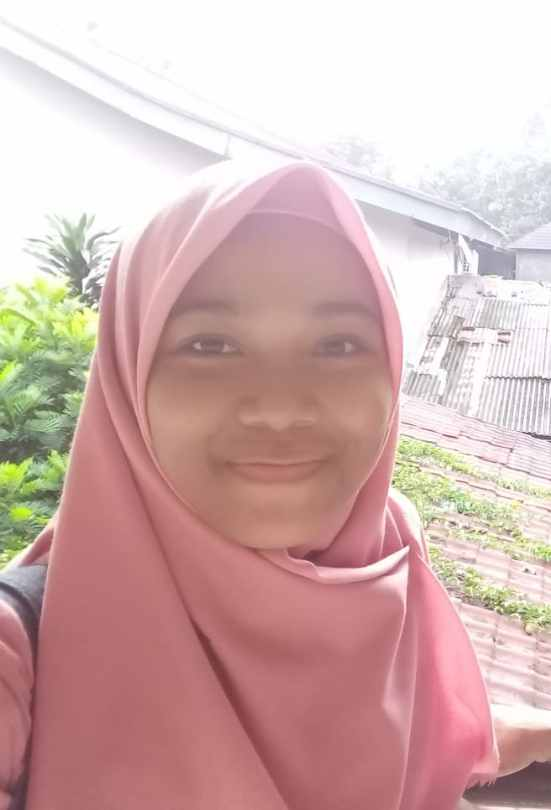

About Me
Halo!
Aku Fajrina dari The Crafthink Room. Aku sangat suka membuat berbagai kerajinan tangan, khususnya dibidang menjahit. Aku mulai belajar mejahit sejak lulus kuliah. Selain menjahit, aku juga belajar menyulam, merajut, dan membuat macrame. Dari semua yang aku pelajari secara otodidak, aku mulai mencoba mengaplikasikannya dengan membuat handmade stuff seperti totebag, slingbag, pouch, waistbag, dompet, cover binder, dan lain-lain. Karena itu, aku membuat blog ini sebagai media untuk berbagi beberapa karya buatanku serta tips dan trik dalam menjahit. Semoga karya-karyaku bisa menginspirasi kalian semua.